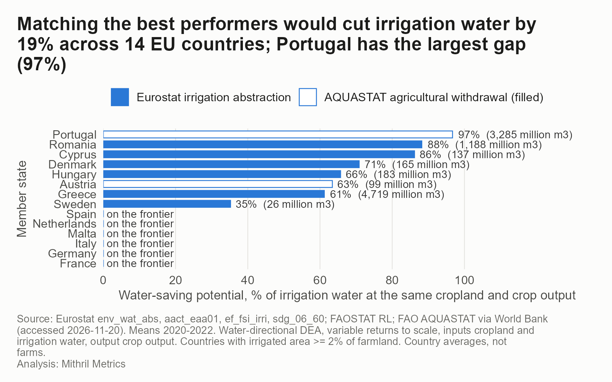
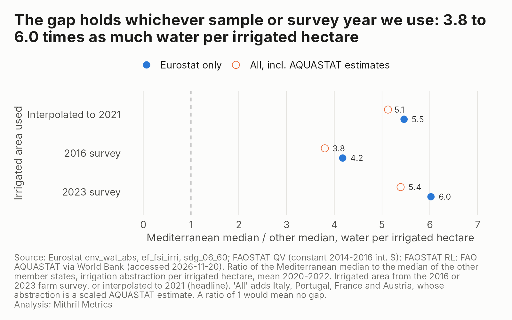

Short answer. Not on its own. In the 10 member states with Eurostat irrigation data, Mediterranean countries abstract 5.5 times more irrigation water per irrigated hectare than the rest (median 6,561 against 1,202 m³/ha, 2020–2022), and the gap stays between 3.8 and 6.0 times across samples and survey years. We cannot separate climate from crop mix and infrastructure in that gap, so we infer that a ranking across countries would mostly show where a country is, not how well it irrigates.
Why this matters now
On 22 October 2026, France and Portugal, backed by Cyprus, Czechia, Hungary and Slovakia, asked EU agriculture ministers for action to reduce average water use per irrigated hectare and to ease EU funding of farm water infrastructure. Ministers discussed the note at the AGRIFISH Council on 26–27 October, and on 27 October the Commission proposed a European Climate Resilience Law that makes water security a mandatory part of national climate-risk plans. Both build on the 2025 Water Resilience Strategy and its target of 10% better water efficiency by 2030. Water per irrigated hectare is the obvious indicator for tracking this. We asked whether it can also be compared across countries. Primary source.
What we did
We divided Eurostat’s irrigation abstraction (mean 2020–2022) by the irrigated area from the 2016 and 2023 farm surveys, for the 14 member states where at least 2% of farmland is irrigated, and compared countries with a Mediterranean climate with the rest. An exact rank test asks how likely a split this clean would be if the climate group made no difference. The headline uses the 10 countries with Eurostat irrigation data. We also tried a frontier model (data envelopment analysis) to adjust for land and crop value; with 10 countries it gives no stable answer, so it is in the technical note only. We set out to rank countries; after our first two model runs we changed the question and chose the climate grouping.
What the data show
Where Eurostat has the data, every Mediterranean country abstracts more per hectare than every other

Among the 10 countries with Eurostat irrigation data, all 4 Mediterranean ones abstract more water per irrigated hectare than all 6 others (exact rank-sum p = 0.010, the smallest possible with groups this size). Greece abstracts the most, 8,680 m³ per irrigated hectare, and Germany the least, 581. The ratio of the medians is 3.8 to 6.0, depending on the survey year used for irrigated area and on whether the 4 estimated countries are included.
We infer that a cross-country comparison on this indicator would mainly sort countries by where they are. How much of the gap is climate and how much is crop mix (vegetables, orchards and rice in the south), conveyance losses or reporting practice, we do not test.
The gap holds whichever sample or survey year we use

The ratio of the medians stays between 3.8 and 6.0, whether we use the 10 countries with Eurostat data or all 14, and whichever farm survey we take irrigated area from. Adding the 4 estimated countries lowers it slightly in each case.
Could a frontier model adjust for climate and crop mix? We tried data envelopment analysis, which compares each country with the best observed mix of land, water and crop value. With 10 countries, two common versions put the “saving potential” at 6% or 93% of irrigation water, depending mainly on one modelling choice. The technical note explains why we use neither.
What this means for policy
- If the aim is to track progress towards the 10% efficiency target, then measuring each country against its own baseline, as current EU texts do, sidesteps the climate gap. The trade-off is that it says nothing about where the room for improvement is largest.
- If a per-hectare indicator were used to compare countries, set eligibility or allocate EU funds, then it would need to account for crop water requirements, crop mix and infrastructure, for example through climate-adjusted or river-basin benchmarks. The trade-off is more data and less simplicity.
- If a common per-hectare threshold were applied, most of the adjustment would fall on Mediterranean irrigators. Whether that is justified depends on basin-level and seasonal scarcity, which national annual averages do not show.
Current EU texts already lean towards the first option: the Commission’s recommendation leaves each member state to set its own efficiency target based on national circumstances (European Commission, June 2025), and the Council note asks for lower water use per hectare without a cross-country yardstick.
Caveats
- We do not separate climate from crop mix, irrigation infrastructure and national reporting practice. The Mediterranean grouping and this framing were chosen after our first two model runs, so the rank test is exploratory.
- The data measure water abstracted, not water applied at the field, as national annual averages that hide basin and seasonal stress. Italy, Portugal, France and Austria have no Eurostat irrigation figures; their scaled AQUASTAT estimates are shown but not used (France’s national statistics give 1,902 m³/ha for 2020, well above our estimate).
- With 10 countries and national averages, we cannot adjust the gap for climate. A frontier model on this sample does not help: two common versions put the ‘saving potential’ at 6% or 93% of irrigation water (see the technical note).
Data & code
- Eurostat annual freshwater abstraction by source and sector (env_wat_abs; wat_proc ABS_AGR_IR (irrigation), ABS_AGR; wat_src FRW; unit MIO_M3), version 16.09.2026 (data to 2024), accessed 2026-11-20. Link
- FAOSTAT Value of Agricultural Production (QV), used for crop output (QV; item Crops; element Gross Production Value (constant 2014-2016 thousand I$)), version 2026-05-11 (bulk catalogue DateUpdate), data to 2024, accessed 2026-11-20. Link
- Eurostat economic accounts for agriculture (downloaded, not used) (aact_eaa01; bulk dimensions am_item, indic_agr (PRD_BP, PRD_PP, SUB, TAX), unit (MIO_EUR, MIO_NAC, MIO_PPS); crop-output code not identified), version 11.11.2026 (data to 2025), accessed 2026-11-20. Link
- Eurostat irrigable and irrigated area (ef_fsi_irri; irr_area UAA_IT; unit PC), version 17.06.2026 (survey years to 2023), accessed 2026-11-20. Link
- Eurostat water exploitation index plus (WEI+) (sdg_06_60; statinfo VAL_A; unit PC), version 28.04.2026 (data to 2023), accessed 2026-11-20. Link
- FAOSTAT Land use (RL) (RL; item Cropland; element Area (1000 ha)), version 2026-10-02 (bulk catalogue DateUpdate), data to 2024, accessed 2026-11-20. Link
- FAO AQUASTAT via World Bank WDI (gap fill) (ER.H2O.FWAG.ZS (agriculture, % of withdrawals); ER.H2O.FWTL.K3 (total, bn m3)), version data to 2022, accessed 2026-11-20. Link
Code to reproduce every number and figure: GitHub. Technical note with more detail (PDF, 2-3 pages): brief.pdf.
Use of AI tools. We use Claude, an AI assistant by Anthropic, as a working tool: to help with coding, data retrieval scripts and first drafts of text. Questions, methods, robustness checks and conclusions are our own, every number is reproducible from the published code, and we review all text before it goes online.